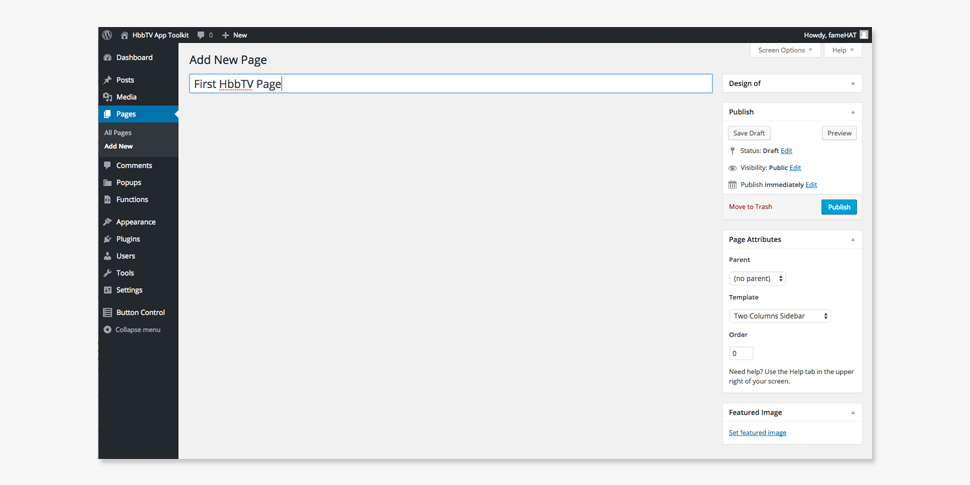
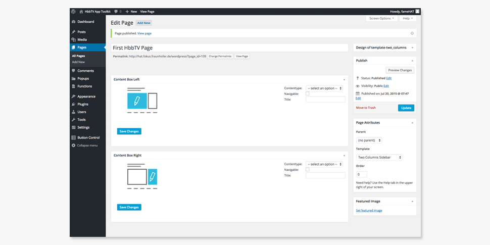
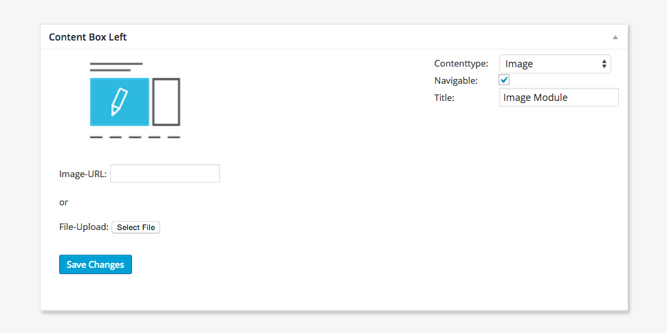
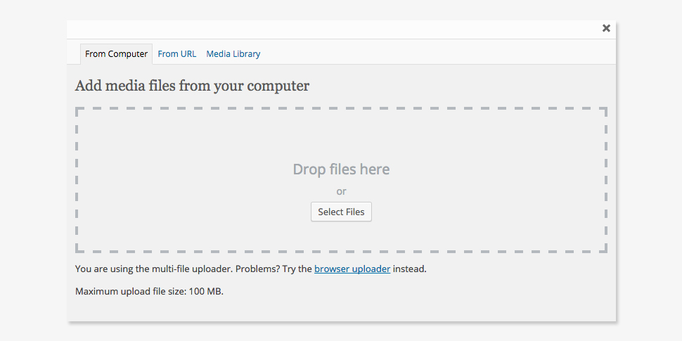
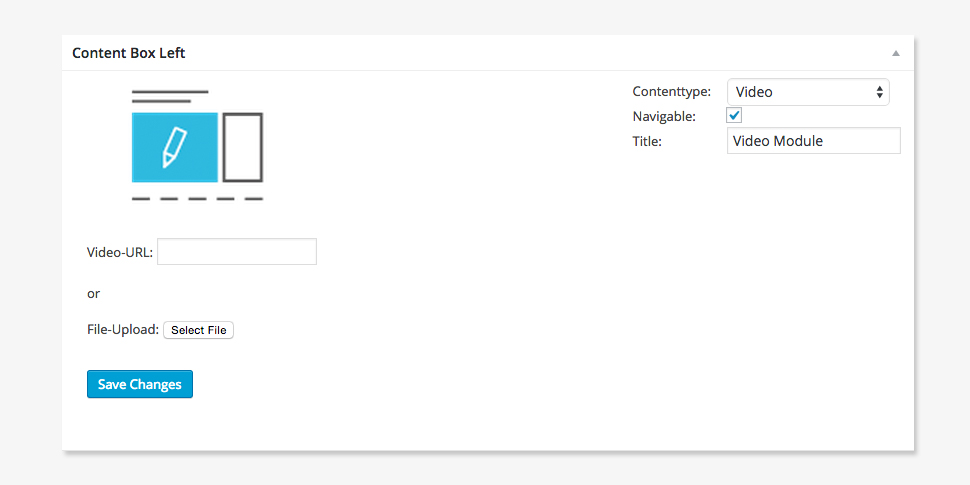
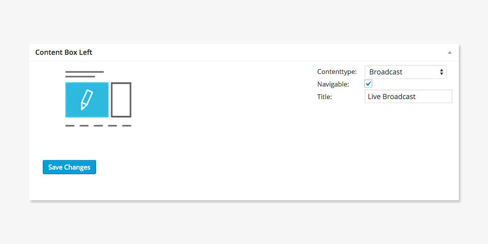

Content
- General
- Documentation
- Theme Installation
- Templates
- Modules
- Button Control
- Theme Optionen
- Menu
- Typography Options
- Shortcodes
- Plugins
- Support and Contact
General
Version
This documentation describes the version 1.0 of the HbbTV Application Toolkit
What is the HbbTV Application Toolkit?
The HbbTV market is growing rapidly both globally and in Europe, and this growth generates a huge demand for HbbTV applications. The development of these apps can be problematic for various reasons:
- development is costly in terms of money and time,
- development requires specialist programming knowledge extending well beyond the simple creation of web pages;
- HbbTV applications are often developed for specific one-off events or breaking news – this short-term usage does not justify a long and costly implementation process;
- the HbbTV standard is differently interpreted by different CE manufacturers and browser vendors.
The HbbTV Application Toolkit (HAT) solves these problems by providing an efficient, easy-to-use and fast means of creating and maintaining applications for HbbTV. Implemented by Fraunhofer FOKUS, we see great potential for HAT in the uptake of programme-related HbbTV apps, leading to the creation of new markets for developers and technology providers as well as for broadcasters, content providers and 3rd-party service providers.
HAT is based on WordPress and allows the very simple, fast and efficient creation of HbbTV applications. It allows content creators to build interactive TV applications without needing specific technical skills. HAT provides a TV-oriented template collection which can be accessed through the editor UI. The content editor can create designs to reflect a specific corporate identity by selecting suitable templates and modules (broadcast or IP-video, text, image and live blog). The live blog includes a 3rd-party service integrated via social media APIs.

How does it work?
TThe app toolkit includes a collection of templates and modules, allowing the creation and control of all application elements including broadcast source, IP video source, images, text, picture and video gallery, social media feeds, custom popups and overall application layout. Further modules will provide capabilities for multi-screen services, privacy, age control and payment. HAT is also able to automatically generate navigation menus for multi-site applications; it also allows customisation and maintenance of a wide range of application settings, including overall graphic design, interaction design and a variety of site templates, as well as the individual handling of remote control buttons. This is particularly important for integration of apps with existing HbbTV broadcast services.
The functions of the HbbTV Application Toolkit is not limited to existing features and modules. HAT is a foundation for HbbTV applications and is by definition expandable, particularly with regard to the recently released HbbTV 2.0 Standard. HAT also enables designers and developers to build their own individual designs, templates, modules or plugins for integration with existing core features of HAT.
Design, generate and deploy
After preparing an HbbTV application using the graphical HAT editor, the app is ready for deployment. HAT allows a user to prepare the HbbTV app package with a single click. It automatically creates a deployment-ready package including all created pages, menus, underlying design templates, modules and individual content. Created applications will run on almost any HbbTV-compliant TV set. We support this interoperability through continuous tests of HAT components and applications, using a variety of HbbTV sets and set-top-boxes in the Fraunhofer FOKUS Smart TV Lab environment.
Benefits:
- Fast and easy creation of program-related HbbTV applications
- Provides a set of app templates tailored to the TV screen
- Content can be added via an easy-to-use web interface
- Supports HbbTV App developers by offering templates and modules modules including interactive video and photo gallery, text, menus, pop-ups social media and plug-ins including companion-screen support.
At a glance
Only a very limited number of services currently address the full potential of the hybrid TV standard, which allows broadcast content to be enhanced with additional synchronous content. The majority of available apps are static - e.g. VoD portals or news apps - and lack any contextual connection to a current broadcast. One reason for this is the lack of available tools for content creators and developers - creating a one-off HbbTV application for a single show is simply too slow and expensive. HAT aims to close this gap by enabling a fast and easy creation of programme-related HbbTV applications without requiring specific coding skills.
Documentation
ImprotantHbbTV Application-Image Sizes in pixel:
- Background Image: 1280px X 720px
- Logo: max. 85px X 250px
- Theme Installation
- Templates
- Full Page
- Two Columns Sidebar
- Three Columns Page
- Modules
- Button Control
- Remote control button
- Name of the Page/Popup/Function
- Remove button
- Theme Options
- Menus The HAT template contains two menus:
- Primary Menu
- Footer Menu
- Typography Options The recommendation for HbbTV Applications is to use the Tiresias Screenfont v8.03 (or equivalent). The HbbTV specification says that an HbbTv app font should be sans-serif, scalable and anti-aliased. The font size for headlines and flowing text is currently unchangeable.
- Shortcodes
- Plugins
Download the HbbTV Application Toolkit Theme on Github.
Installation via the WordPress admin panel
After downloading the fraunhoferfokus-HAT-XXX.zip file to your computer, please go to Appearance → Themes in your WordPress admin panel and click on Add New / Upload Theme. Now upload your the fraunhoferfokus-HAT-XXX.zip file and click the Install now button. The HbbTV Application Toolkit theme will now be your active theme.
Installation via FTP
Alternatively you can also install the theme directly to your server with a FTP client (e.g. Filezilla). Just drop the un-ziped HbbTV Application Toolkit theme folder into your …/wp-content/themes/ folder. Now you will see the HbbTV Application Toolkit theme in your WordPress admin panel under Appearance / Themes. From there you can activate the HbbTV Application Toolkit theme by clicking on the Activate button (on-mouse-hover).
Installation via git
Another alternative is to clone the HAT project directly in your …/wp-content/themes/ folder.
$ cd your_wordpress_root/wp-content/themes/
$ git clone https://github.com/fraunhoferfokus/HAT.gitPlease feel free to contribute to our open source project!
The HbbTV Application Toolkit provides currently three templates. The current template collection provides a column structure. We offer various one-, two- and three-column templates, which can be filled using HbbTV conform Modules.
You can choose the page template under Page Attributes / Template in your page admin area. Here is an overview of all page templates:
Let's build your first HAT page with some very simple steps:
Step 1
Navigate to the Pages tab in the administration backend and create a new Page by giving it a title:

Step 2
In the Page Attribute section, select a template from the dropdown list and click the ‘Publish’ button. Now you will see two metaboxes (for each column in the template). Each box must be filled with a Module. HAT modules are described in the Module section of this documentation.
Step 3
After filling the metaboxes with your selected module, save your changes, either via the ‘Save Changes’ button in the metabox or the 'Update' button in the 'Publish' section.

Step 4
View the results with the 'View Page'- button.
The HbbTV Application Toolkit provides Modules, which fills the Templates with HbbTV-conformed content. Every module is navigable in the resulting HbbTV App. The module can be selected with the arrow keys of the remote control. If not marked as ‘Navigable’, the module cannot be selected in the App. The following modules are included in the HbbTV Application Toolkit Theme:
Text
The Text Module is based on the familiar WordPress editor. In the Text Module you can also add media. By using Shortcodes you can simply and effectively style your Text Module. Select 'Navigable' to enable scrolling of longer texts by using the arrow keys of the remote control.
Image

To display a particular image in a content box you need the Image Module. Here you can upload an image to your WordPress database, or provide a weblink to the required image. By selecting an image via the ‘Select File’ button, the WordPress Media Uploader will open in a popup. Here you can either drag & drop a file from your desktop, select a file by clicking the ‘Select Files’ button, insert a URL or search for your image in the Media Library. If you want to upload a file, make sure that the maximum file size is no greater than 100 MB.
Video
Uploading video follows the same procedure as uploading images. Make sure that the maximum video file size is no greater than 100 MB. For larger files, use an FTP program to upload the file to the upload folder of your ../wp-content/uploads/.

Broadcast
Display your broadcast stream by selecting the Broadcast Module. We recommend that you don’t select the ‘Navigable’ option for this module, and that you use a Template with a large content box for this.
Gallery
Social Media
ScribbleLive
With the Button Control feature you can set the actions of your remote control buttons (numbers and color keys). The Button Control feature is available in the backend under the 'Button Control'-tab. It is divided into two areas.
Pages, Popups and Functions
On the left side of the Button Control feature you will find a list of all your further generated Pages, Popups and Functions. Pages, which are already part of the Primary Menu will not displayed in the 'Button Control' Pages section.
Actions
These actions are displayed as draggable lists. The order of all actions elements can be switched here by dragging a Page/Popup/Function to the preferred display position. If you want a special remote control button for your Page/Popup/Function, just drag and drop a number or colour button from the bottom to your Page/Popup/Function and change the behavior. This actions area is also divided in two sections: Footer Menu Actions and Invisible Actions.
Let’s start with Footer Menu Actions:
The Footer Menu Actions displayed in the Footer Menu of the HbbTV Application Toolkit Theme includes the assets of the buttons. The list-elements are divided into three sections:
If you have already generated a Primary Menuyou will find this menu at the top on this list (default button 0). It is in a fixed position and will be displayed always - you cannot remove it from the Footer Menu. You can change the button action to open the menu. In the bottom of this section you will find all available buttons. Just drag & drop the button you want to open your menu with the remote control. The Primary Menu will always be in the first position of the Footer Menu. Another special function in the Footer Menu is the Hide functionality. As described in the HbbTV specification, the red button of the remote control must close the HbbTV Application. This means, that you cannot change the function of this button. But unlike the Primary Menu you can change its position in the list and make it invisible to your users.
Invisible Actions
Invisible Actions will be not displayed in the Footer Menu, but will work as hidden buttons. Mostly this will be helpful for integrating HbbTV functions
Under Appearance / Customize Under Appearance / Customize you will find all theme customization options for your HbbTV Application. The Customizer provides a live preview of your changes before you accept or reject them.
In the Header tab you can give your HbbTV App a headline that will be displayed in all templates.
The previously-generatedPrimary Menu will be assigned to the Navigation tab.
To set your landing page for your HbbTV app, select the Frontpage from your generated Pages in the 'Frontpage' tab.
Images like the logo and maybe the background of your HbbTV app is creating from the Logo tab and the Background Image tab. As you known WordPress there is the custom uploader for images included. Make sure that your chosen images are in the right size!
In the General Colors tab you can change header text and background color, the theme background color and your text color.
In the Module Colors tab you can change header text and background color, the theme background color and your text color.
The Footer Menu is explained in the Button Control section of this documentation. The Primary Menu is generated at the backend under Appearance → Menus. You can build your own menu using some simple and short steps.
Step 1
Open the Menu Admin Page at Appearance → Menus and generate an new Menu
Step 2
Set the theme locations to “Primary Menu”
Step 3
Drag and Drop all your menu items (Pages or Popups) in the Menu Structure and save the whole menu
Step 4
Go to Appearance → Customize to change to the Application view
Step 5
Open the Navigation area on the left side and change the Primary Menu to your recently-generated one
That’s it!Shortcodes will be available soon.
Support or Contact
Having trouble with the HbbTV Application? Contact hat-ml@okus.fraunhofer.de and we’ll help you sort it out.